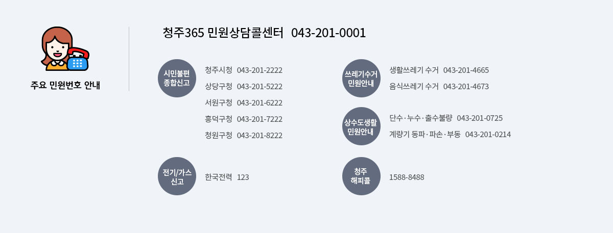

탭메뉴
2018년 추석 연휴기간 주요 생활민원

청주365민원콜센터
- 대표번호 : 043-201-0001
- 운영시간 : 365일(평일 8:00 ~ 20:00 / 토·일·공휴일 9:00 ~ 18:00)
※ 추석연휴 : 2018. 9. 22.(토) ~ 9. 26.(수) 09:00 - 18:00 - 안내내용 : 교통, 환경, 시정일반, 행정지원, 농업정책, 복지, 세무 등 생활불편민원 접수
시민불편 종합신고
- 운영기간 : 2018. 9. 21(금) ~ 9. 27(수) 09:00
- 운영내용 : 연휴기간 중 각종 생활민원 접수, 사건사고, 가축질병 의심신고 등
생활(음식물) 쓰레기 수거안내
- 운영기간 : 2018. 9. 22(토) ~ 9. 26(수), 5일간
- 수거대상 : 생활쓰레기(일반쓰레기, 재활용 등), 음식물쓰레기
- 안내번호(043)
일자별 수거 일정
| 구 분 | 9.22(토) | 9.23(일) | 9.24(월) | 9.25(화) | 9.26(수) |
|---|---|---|---|---|---|
| 생 활 | ○ | × | × | ○ (일부운영) |
○ |
| 음식물 | ○ | × | × | ○ | ○ |
※ 9.25.(화) 청원구 생활폐기물 수거 일부운영
- 한일환경(296-8002) : 내덕1동(공동/단독주택)
- 공영환경(214-4688) : 오창읍 공동주택(쌍용, 이안, 한라제외), 내수초정리일원 식당, 오창읍 양청리 중심가
장사(장묘) 안내
| 시설명 | 연락처 | 소재지 |
|---|---|---|
| 목련공원 | 043-270-8574 | 상당구 목련로 731(월오동) |
| 매화공원 | 043-270-7320 | 상당구 가덕면 상장인차로 460 |
| 장미공원 | 043-270-7330 | 청원구 오창읍 양청3길 88 |
| 청주시장례식장 | 043-291-4444 | 상당구 목련로 731(월오동) |
- 추석연휴 기간 장사시설 운영(9월24일 화장장 휴관, 민원실 업무만 가능)
- 추석연휴기간 장사시설 추모객 안내사항
장사시설을 이용하시는 추모객께서는 추석연휴기간 공설묘지내 주차장시설이 협소하고 도로 및 진입로에 불법주정차로 인해 교통정체가 예상되므로 대중교통 이용을 당부 드리며 또한 안내 도우미 지시에 따라 차량 질서유지로 안전하고 즐거운 성묘가 되시기를 바랍니다.
무인민원발급창구 안내
상당구
서원구
흥덕구
청원구
2018년 추석 연휴기간 주요 교통정보
교통종합상황실
- 운영기간 : 2018. 9. 21 ∼ 9. 26. 09:00-18:00
- 안내번호 : 043-201-2865~7
청주해피콜 운행안내
- 운행기간 : 2018. 9. 22 ∼ 9. 26. 09:00-18:00
- 운행내용 : 26대 / 06:00 ∼ 익일 01:00까지 운행
- 예약 및 문의 : 1588-8488
견인보관소 안내
- 운영기간 : 2018. 18. 9. 22 ∼ 9. 26. 09:00-18:00(상황근무)
- 안내번호 : 043-270-8518~20 (청주시 시설관리공단)
공영주차장 이용 안내
| 주차장명 | 위치 | 개방시간 | 비고 |
|---|---|---|---|
| 가경동환승주차장 | 청주시 흥덕구 가경동 풍산로14 | 24시간 정상근무 |
043-232-7296 |
| 청주시 도매시장주차장 | 청주시 흥덕구 백봉로 254 | 9.22-9.26 | 043-270-8518∼20 |
| 대농3지구 공영주차장 | 청주시 흥덕구 복대동 288-22 | 9.22-9.26 | 043-270-8518∼20 |
| 청주시 시내공영주차장 | 청주시내 일원 | 9.22-9.26 | 043-270-8518∼20 |
| 청주시청 | 청주시 상당구 상당로 155 (북문로3가) |
24시간 | 043-201-2222 |
| 청주시청 (제2청사) |
청주시 상당구 상당로69번길 38 (북문로1가) |
24시간 | 043-201-2222 |
| 상당구청 | 청주시 상당구 남일면 단재로 466 (효촌리) |
24시간 | 043-201-5222 |
| 서원구청 | 청주시 서원구 사직대로 227 | 24시간 | 043-201-6222 |
| 흥덕구청 | 청주시 흥덕구 대농로 88 (복대동) |
24시간 | 043-201-7222 |
| 청원구청 | 청주시 청원구 직지대로 871 | 24시간 | 043-201-8222 |
| 어린이회관 | 청주시 상당구 명암동 73-4 | 24시간 | |
| 청주시립미술관 | 청주시 서원구 충렬로18번길 50 | 오픈시간 (추석휴관) |
|
| 농업기술센터 야외운동장 |
청주시 상당구 남일면 단재로480 | 24시간 | |
| 청주체육시설 부설 주차장 |
청주시 서원구 사직동 808 번지 일대 | 24시간 |
심야운행버스정보(터미널-오송역간)
- 노선명 : 747
- 경 로 : KTX오송역-충청대학-시외버스터미널
| 출발지 | 시각 | 도착지 | 시각 |
|---|---|---|---|
| 시외버스터미널 | 23:30 | 오송역 | 23:50 |
| 00:10 | 00:35 | ||
| 오송역 | 22:30 | 시외버스터미널 | 22:50 |
| 23:10 | 23:30 | ||
| 23:50 | 0:10 | ||
| 00:35 | 00:55 |
고속/시외버스 증회 운행(청주발 기준)
- 운행기간 : 2018. 9. 21(금) ~ 9. 26(수), 6일간
고속버스 주요노선 증회 운행
- 주요노선 증회 운행계획 : 8노선 275회 ⇒ 356회(증 81회, 30%)
| 노 선 | 현 행 | 증 회 | 계 | 업체명 |
|---|---|---|---|---|
| 청주-서울(강남) | 111 | 18 | 129 | 속리산,중앙 |
| 청주-동서울 | 25 | 4 | 29 | 속리산,중앙 |
| 청주-상봉 | 2 | 3 | 5 | 중앙 |
| 청주-부산 | 9 | 5 | 14 | 속리산,한일 |
| 청주-대구 | 12 | 4 | 16 | 속리산, 삼화 |
| 청주-광주 | 16 | 5 | 21 | 속리산, 금호 |
| 충주-서울 | 80 | 30 | 110 | 경기대원 |
| 제천-서울 | 20 | 12 | 32 | 동부고속 |
| 합 계 | 275 | 81 | 356 |
※ 수송수요에 따라 탄력적 조정 운영
시외버스 주요노선 증회 운행
- 주요노선 증회 운행계획 : 7노선 129회 ⇒ 206회(증 77회, 70%)
| 노 선 | 현 행 | 증 회 | 계 | 비고 |
|---|---|---|---|---|
| 오창-서울(남부) | 13 | 13 | 26 | |
| 북청주-서울(남부) | 19 | 10 | 29 | |
| 북청주-서울(센트럴) | 12 | 12 | 24 | |
| 청주-서울(남부) | 55 | 20 | 75 | |
| 청주-서울(센트럴) | 15 | 15 | 30 | |
| 속리산-서울(센트럴) | 4 | 4 | 8 | |
| 청주-전주 | 11 | 3 | 14 | 보은,청주 |
| 합 계 | 129 | 77 | 206 |
※ 수송수요에 따라 탄력적 조정 운영
불법 주․정차 특별 지도단속 소통관리
- 운영기간 : 2018. 9. 22(토) ~ ’18. 9. 26(수), 5일간
- 단 속 반 : 구청 교통지도팀
- 단속방법 : 주요 간선도로, 대형쇼핑몰 및 터미널 등 혼잡지역 지도단속
- 단속문의 : 상당구청 043-201-5401, 서원구청 043-201-6401, 흥덕구청 043-201-7401, 청원구청 043-201-8401
공원묘지 경유 안내
- 연휴기간 : 2018. 9. 22(토) ~ 9. 26(수), 5일간
공원묘지 경유 운행 안내 공원묘지명 노선번호 기 점 노선경로 종 점 운행횟수 목련공원 921-1 청주예술대 문화산업단지-상당공원-도청-육거리-월오동 목련공원 15회 가덕 212 오동육교 성모병원-시청-영운동주민센터-남일면사무소 가덕삼항리 9회 장미공원 713 분평종점 육거리-청주대-성모병원 양청리 50회 717 동부종점 금천동-사창사거리-터미널-청주역-옥산면 오창과학단지 21회
2018년 추석 연휴기간 주요 문화행사
청주시립미술관
- 운영기간 : 2018. 9. 22. ~ 9. 26.(추석연휴 기간 중 운영 월요일 휴관)
- 운영안내 : 043-201-2649 ~ 50(본관) / 043-201-0914(대청호미술관)
- 장 소 : 청주시 상당구 대청호반로 721 청주시립대청호미술관
- 운영내역 : 미술관 기획전시 운영(추석 연휴기간 중 추석당일만 휴관)
청주시립대청호미술관 안내 전시 일시(추석기간) 장소 관람료 비고 내일의 미술가들 9.22-9.26 청주시립미술관(본관) 성인 1,000원 추석당일 휴관
(9.24)납작한 가장자리 9.22-9.26 대청호미술관(분관) 무료
(문의문화재단지 입장객 대상)추석당일 휴관
(9.24)* 청주미술창작스튜디오 : 전시종료에 따른 휴관(연휴기간 중 전시없음)
* 오창전시관 : 9.23. ~ 26. 추석연휴기간 휴관(오창호수도서관 휴관일과 동일)
청주고인쇄박물관
- 운영기간 : 2018. 9. 22. ~ 9. 26.
- 운영안내 : 043-201-4266, 043-260-2503 / 09:00 ~ 18:00
- 운영내용
청주시립대청호미술관 안내 관람/체험 일시 장소 관람비 비고 박물관 관람 09:00 ~ 18:00 청주고인쇄물관 무료 추석 당일 휴관 인쇄체험 09:00 ~ 18:00 근현대 인쇄전시관 무료 옛책, 북아트, 죽간만들기 체험 09:00 ~ 18:00 금속활자 전수교육관 유료
국립청주박물관
2018년 추석 한마당 '희희낙락(喜喜樂樂), 추석'
- 기 간 : 2018. 9. 22. (토) ~ 9. 26. (수)
※ 9. 24.(월) 추석 당일 휴관
※ 각 체험프로그램 마다 일정이 다르니, 각각의 일정을 참고해주세요. - 상세내용 : 자세히보기
- 세부내용
2018년 추석 한마당 프로그램 안내 프로그램 일시 장소 비고 전통놀이 및 악기체험 9월 22일 ~ 9월 26일
10시 ~ 17시어린이박물관 앞뜰 24일 휴관 가족영화상영 9월 22일 ~ 9월 26일
13시 30분, 16시문화사랑채 소강당 9.22(토) 날아라! 호빵맨 : 코코링과 기적의 별 9.23(일) 마이펫의 이중생활 9.25(화) 코렐라인 : 비밀의 문 9.26(수) 밤비 성인 연극
'공익 vs 공익'9.22.(토) 오후3시 청명관 대강당 사전접수 : 9.17 - 9.21.
(043-229-6314)오색송편 나눔 행사 9.25.∼26.
10시부터 선착순 마감상설전시실 로비 1일 선착순 300명
어린이, 초등학생 대상퓨전마당극
‘춘아춘아 옥단춘아’9.26.(수) 15시 청명관 대강당 당일 선착순 입장
청명관 로비에서
13시부터 표 배부(자유석)
예술의전당
2018 한가위 특별공연 <아름다운 춤의 교향곡>
- 일 시 : 2018. 9. 24. 16시
- 장 소 : 대공연장
- 프로그램 : <달, Theme>, <열락> 외 2작품
- 관 람 비 : 전석무료 / 14시30분부터 선착순 티켓 배부(예술의전당 로비)
- 공연문의 : 청주시립무용단, 043-201-0975~77
어린이회관, 동물원

- 운영기간 : 2018. 9. 22(토) ~ ’18. 9. 26(수), 5일간
※ ‘18. 9. 24.(월) 휴관 - 운영안내 : 043-201-4863, 청주랜드관리사업소
- 운영내용 : 기후변화체험, 신재생에너지체험, 청주의 과거와 미래, 어린이 체험관, 환상여행, 놀이동산, 동물관람
기타문의
| 관광지 | 연락처 | 비고 |
|---|---|---|
| 문의문화재단지 | 043-201-0915 | 추석 당일만 휴무 |
| 손병희선생 유허지 | 043-201-0920 | |
| 단재신채호 기념관 | 043-201-0931 | |
| 청주백제유물전시관 | 043-263-0107 |
2018년 추석 연휴기간 전통시장 안내

전통시장 주차 안내
| 시 장 명 | 주소/구간 | 주차면수 | 운영시간/기간 |
|---|---|---|---|
| 육거리시장 | 상당구 석교동 60-4(1주차장) | 41 | 09:00~18:00 |
| 상당구 석교동 125-88(주차타워) | 151 | 09:00~18:00 | |
| 청주시 상당구 청남로2197번길 청남교 ~ 탑웨딩홀 |
도로양측 | 9.13일-10.7일 2시간 |
|
| 서문시장 | 상당구 서문동 166-60 | 30 | 무료개방 |
| 성안길상점가 | 상당구 서문동 100-1 | 121 | 10:00~21:30 |
| 사창시장 | 서원구 사창동 290-9 | 46 | 무료개방 |
| 사직시장 | 서원구 사직동 558-38 | 25 | 09:00~18:00 |
| 원마루시장 | 청주시 서원구 원마루로 14번길 2 용평교사거리~방서교삼거리 |
도로양측 | 상시허용 |
| 두꺼비시장 | 청주시 서원구 수곡로58번길 한마음약국 ~ 한마음1차(아) |
도로양측 | 9.13일-10.7일 2시간 |
| 복대가경 | 청주시 흥덕구 복대동 1102 | 31 | 09:00~18:00 |
| 청주시 흥덕구 풍산로 117 유니온베이 ~ 코코다 |
도로편측 | 9.13일-10.7일 2시간 |
|
| 농산물시장 | 청주시 흥덕구 백봉로 254청주시 흥덕구 백봉로 254 한우식당 ~ 부흥유통 |
도로편측 | 9.13일-10.7일 2시간 |
| 직지시장 | 흥덕구 봉명동 472-12 | 33 | 무료개방 |
| 가경터미널 | 흥덕구 가경동 1286 | 52 | 09:00~18:00 |
| 청주시 흥덕구 풍년로160번길 백두산원예 ~ 흥덕한의원 |
도로편측 | 2.5일-2.17일 2시간 |
|
| 내수시장 | 청원구 내수읍 마산리 36-11 | 77 | 상시허용 |
| 청주시 청원구 내수읍 마산3길 주공(아)입구 ~ 내부소방파출소 |
도로양측 | ||
| 북부시장 | 청원구 우암동 347-7(2주차장) | 23 | 09:00~17:30 |
| 청원구 우암동 344-10(1주차장) | 11 | 09:00~17:30 | |
| 청주시 청원구 우암동 345-2 피보사랑약국 ~ 국민상조 |
도로편측 | 9.13일-10.7일 |
2018년 추석 연휴기간 당직 약국/병원 안내
구청별 당직 약국
구청별 당직 의료기관
당직 치과의원
| 명칭 | 소재지 | 전화번호 (043) |
진 료 계 획 | ||||
|---|---|---|---|---|---|---|---|
| 9.22.(토) | 9.23.(일) | 9.24.(월) | 9.25.(화) | 9.26.(수) | |||
| 일등플란트치과의원 | 충북 청주시 상당구 상당로 102 (북문로2가) |
221-2836 | 10:00~14:00 | - | - | - | 10:00~20:30 |
| 용암부부치과의원 | 충북 청주시 상당구 월평로 191 (용암동) 현대1차A상가2층 |
294-9075 | 09:30~13:00 | - | - | - | 09:30~17:00 |
| 성심치과의원 | 충북 청주시 상당구 상당로 4-1,2층 (서운동) |
250-2875 | 09:30~13:00 | ||||
| 이튼연세치과 | 충북 청주시 상당구 상당로 79, 3층 (북문로1가) |
223-9075 | 09:30~13:00 | 09:30~18:00 | |||
| 한맥치과의원 | 충북 청주시 흥덕구 사직대로 58 (복대동) 한맥빌딩5층 |
266-4993 | - | - | - | - | 09:30~18:30 |
| 이병호치과의원 | 충북 청주시 흥덕구 강내면 태성탑연로 455 | 236-2822 | 09:00~14:00 | - | - | - | - |
| 즐거운치과의원 | 충북 청주시 흥덕구 서부로 1307 (가경동) 미젼빌딩301호 |
233-2875 | 09:00~14:00 | - | - | - | - |
| 하나플란트치과의원 | 충북 청주시 흥덕구 풍산로26 (가경동)3층 |
237-3322 | 09:00~13:00 | - | - | - | - |
| 청주 쥬니어치과의원 | 충북 청주시 흥덕구 가경로 10 (가경동) 엘리트빌딩401호 |
232-2354 | - | - | - | - | 10:00~18:00 |
| 청주연치과 | 충북 청주시 흥덕구 사운로 292,2층 (운천동) |
267-2080 | 09:00~18:30 | ||||
| 청주웰치과 | 충북 청주시 흥덕구 사직대로 26 (복대동) |
278-8100 | 09:00~14:00 | 09:30~17:30 | 09:30~17:30 | 09:30~18:30 | |
당직 한의원
| 명칭 | 소재지 | 전화번호 (043) |
진 료 계 획 | ||||
|---|---|---|---|---|---|---|---|
| 9.22. (토) |
9.23. (일) |
9.24. (월) |
9.25. (화) |
9.26. (수) |
|||
| 한국경희한의원 | 충북 청주시 상당구 단재로 119 (영운동) |
255-8275 | - | 09:00~17:00 | 12:00~17:00 | 09:00~17:00 | 09:00~17:00 |
| 경희한의원 | 충북 청주시 상당구 수동 316-4 | 256-3016 | 09:00~15:00 | - | - | - | - | 나비솔한방병원 | 충북 청주시 서원구 산남로 56 에버프라자 3~5층 | 286-7700 | 10:00~17:00 | 09:00~17:00 | 09:00~17:00 | 09:00~17:00 | 10:00~21:00 |
| 피브로한의원 | 충북 청주시 흥덕구 가경로 123 | 237-1577 | 09:00~14:00 | - | - | - | - |
| 정경용한의원 | 충북 청주시 흥덕구 진재로 50 | 234-4055 | 09:00~17:00 | - | - | 09:00~17:00 | 09:00~17:00 |
| 우리집한의원 | 충북 청주시 흥덕구 2순환로1050번길 24 | 238-1079 | 09:30~13:00 | - | - | - | 09:30~20:00 |
| 진천식한의원 | 충북 청주시 흥덕구 복대로 146 2층 | 231-1822 | 09:00~13:00 | - | - | - | 09:00~17:00 |
| 나비솔한의원 | 충북 청주시 흥덕구 풍산로 30 삼화빌딩 2층 | 232-3100 | 09:30~17:00 | - | - | 09:30~17:00 | 09:30~17:00 |
| 예성한의원 | 충북 청주시 청원구 율량로 96 2층 | 215-7533 | 09:30~13:00 | - | - | - | 09:30~16:00 |